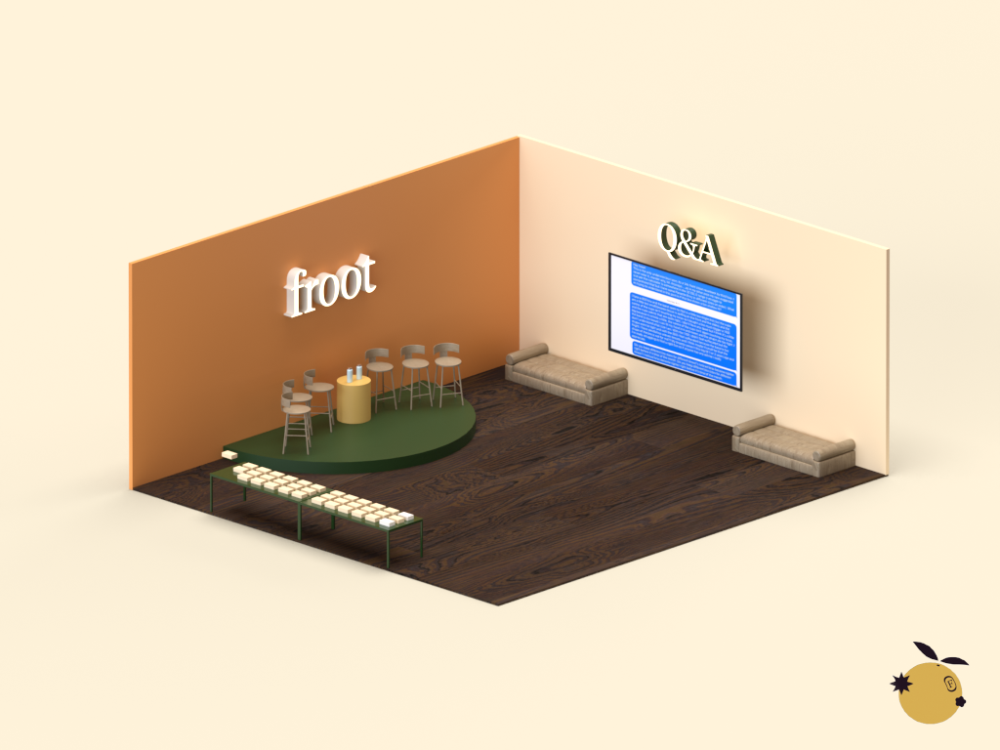
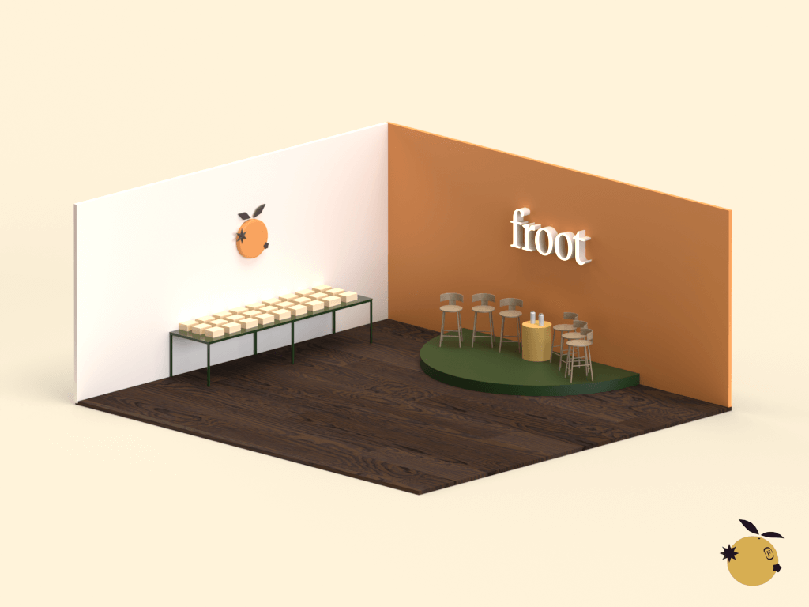

FROOT
Event Design
My team was assigned to create a branding strategy for Froot, a startup dedicating to creating a platform for women to learn about breast health.
Our proposal was for Froot to launch their app with a pop-up event, or "Froot Stand". The purpose of the Froot Stand would be to welcome their client base and introduce users to the Froot family, creating a sense of loyalty to their brand to promote it and increase downloads.
My role in this project was to render the interior of the Froot Stand. I designed the layout, color design, and setup of the store—this lended a hand to consistent branding of the company.
Our proposal was for Froot to launch their app with a pop-up event, or "Froot Stand". The purpose of the Froot Stand would be to welcome their client base and introduce users to the Froot family, creating a sense of loyalty to their brand to promote it and increase downloads.
My role in this project was to render the interior of the Froot Stand. I designed the layout, color design, and setup of the store—this lended a hand to consistent branding of the company.


I created this by first sketching out my plans in Procreate, then using my sketch as a reference when rendering it using Adobe Dimension. Check out the slide deck (which I also designed) for our branding strategy here.